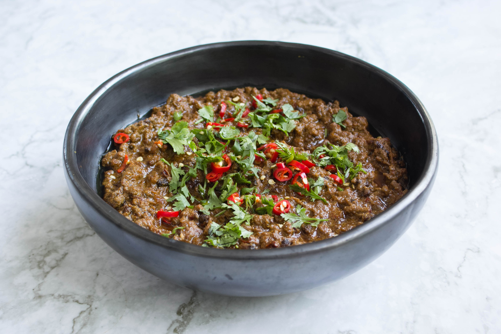

Keema Curry Recipe

Discription
The image above is of a finished spicey keema curry.
Every culture has its favourite mince dishes, and the Indian subcontinent’s
version is rich in flavour, velvety in texture and aromatically spiced
Ingrediants
- 2 tbsp neutral oil
- 6 black peppercorns
- 1 black cardamom pod, lightly crushed
- 3 green cardamom pods, lightly crushed
- 1 small piece cinnamon stick
- 1 tsp coriander seeds
- ½ tsp cumin seeds
- 1 large red onion, peeled and finely chopped
- 4 large garlic cloves, peeled and crushed or grated
- 1 tbsp finely grated root ginger
- 2 green finger chillies, one finely chopped, the other slit lengthways
- ½ tsp ground coriander/li>
- ½ tsp ground cumin
- 100g Greek or thick whole milk yoghurt
- 500g minced lamb or mutton, preferably about 20% fat
- 1 tsp fine salt
- ½ tsp plain flour, or cornflour
- 5 tbsp (10g) fresh mint leaves, finely chopped
- 5 tbsp (20g) fresh coriander leaves and stems, finely chopped
- 100g frozen peas
Steps
- Heat the oil in a wide, heavy-based pan over a medium-high heat, add the whole spices and fry until aromatic.
- Turn down the heat to medium-low, add the onion and cook, stirring regularly, until soft and starting to brown
- Stir in the garlic, ginger and chopped chilli, fry, stirring, for a couple of minutes, then add the ground spices and fry for another minute.
- Turn the heat back up to medium-high, stir in the yoghurt and cook for two to three minutes, until it begins to separate.
- Stir in the lamb, salt and whole slit chilli, turn down the heat a bit and cook until the mince begins to release its juices.
- Sprinkle the flour over the top and stir in, turn the heat right down and leave to cook for 20 minutes.
- Stir in the chopped herbs and peas, simmer for another 15 minutes, then serve as above.
Back Home